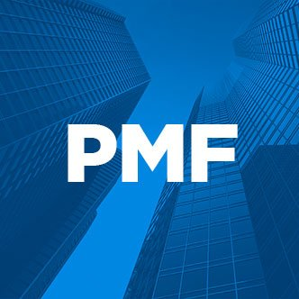
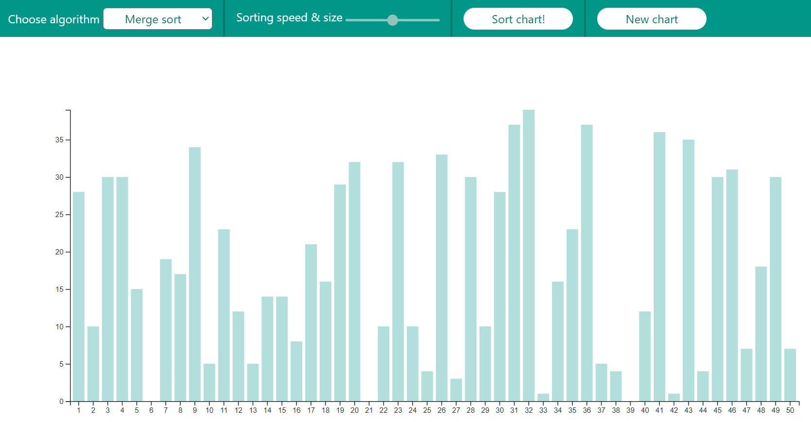
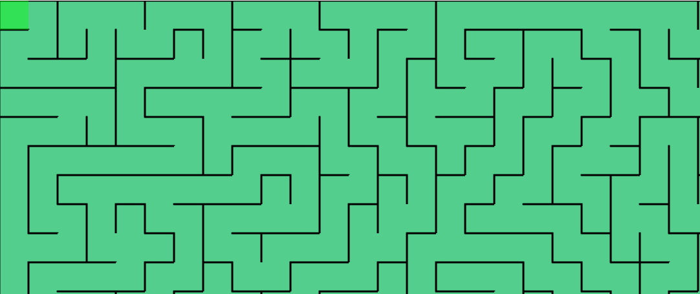
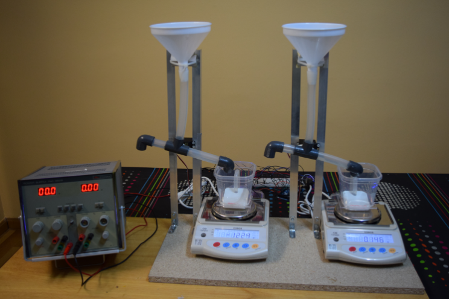
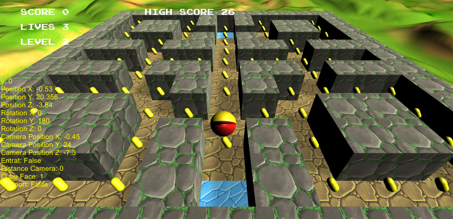
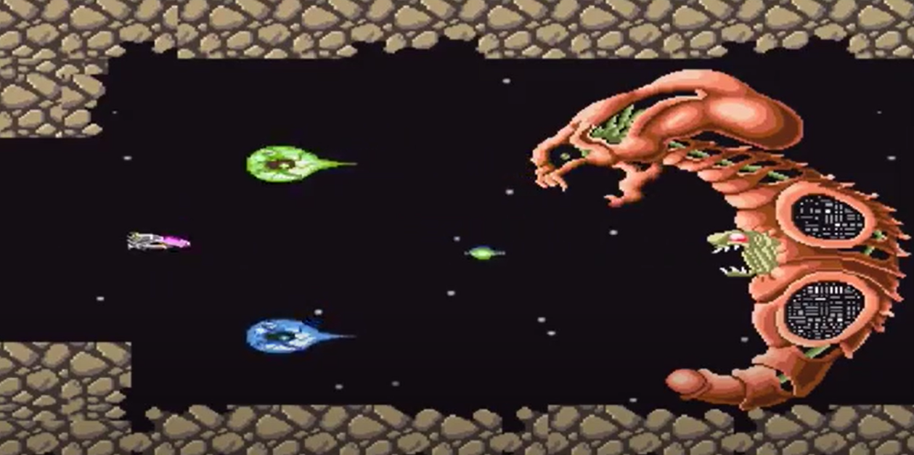

David Solà
Software Engineer and lifelong learner.
Hello World! Welcome to my website :)
# About
I've been working with backend and cloud computing services since 2015. Currently working at Sopra Steria.
Because every now and then a new JS framework is released, I've decided to make this website from scratch creating a basic template and bundling system without any libraries. You can check the source code here.
# Projects
About the company
Sopra Steria, European leader in digital transformation, provides one of the most comprehensive portfolios of end to end service offerings in the market: Consulting, Systems Integration, Software Development and Business Process Services.
Responsabilities
Since I've been here for a while I've had the opportunity to be in two very different areas with different methodologies and technological stack:
- Chatbots: Development and leading of a machine learning supported Chatbot for an important company, covering most life cycle tasks of the project.
- Banking: Development of international banking web applications using a bank-owned (ABSIS) framework based on Spring.- 
Web developer
PM Farma-
About the company
Ibero-American Pharmaceutical Marketing Portal.
Responsabilities
Creation of a new intranet for the employees of the company.
# Education
Master's degree in Internet of Things
Universitat Politècnica de Catalunya
2017-2018
Bachelor Degree in Informatics Engineering
Universitat Politècnica de Catalunya
2010-2016
# Side projects
.dotfiles
Backup, restore and sync the preferences and settings of a developer toolbox. Aww I love this project since I find it super useful in my day to day.
Sorting visualizer
A cool way to visualize most common sorting algorithms.
e-voting System
Master thesis project. The entire voting authentication process is digitized during a vote and information is collected so that it can be analyzed later.
Hackatravel
Hackatravel is a service that provides information about hackathons events at a European level and also provides you with the prices of flights to the city organizing the event.
Maze generator
A simple procedural maze generator using p5.js library.
Electronic pluviograph
Bachelor's thesis focused on the design and construction from scratch of a high-precision electronic pluviograph for the Fabra Observatory, in Barcelona.
3D Pacman
Pacman game made using Unity 5.
R-Type
Recreation of the mythical game using original assets. Made with C++ and OpenGL.
